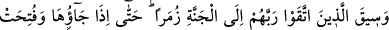
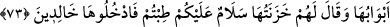

Bunlardan biri kendisinde de varmış gibi davranan olursa, onu ateşe atarım.”[148] İşte
bu mânâdan dolayı Hz. Peygamber (s.a.): “Kalbinde zerre kadar kibir bulunan cennete
giremez!”[149] buyurmuştur. Oradakilerden bir adamın: “İnsan giysisinin güzel olmasını
ister, (bu da kibirlenmeye dahil midir)?” diye sorması üzerine de: “Şüphesiz Allah
güzeldir, güzeli sever. Kibir hakkı kabul etmemek ve insanları küçümsemektir.”[150]
yâni, Allah’ın emir ve yasaklarına gereken önemi vermemek ve O’ndan korkmamak;
insanları küçümsemek ve ayıplamak demektir, diye cevap vermiştir.
Hattâbî bu hadîsin te’vili sadedinde iki açıklama zikreder: Bunlardan biri îman
etmeye karşı büyüklenmektir. İkincisi de azaba uğratılmak veya affedilmek sûretiyle
kibrin ondan sökülüp alınmasıdır. Dolayısıyla kişi kalbinde zerre kadar kibir kalmış
olarak cennete girmemiş olacaktır. Nitekim Allah Teâlâ “Kalplerinde kinden ne varsa
hepsini çıkarıp atarız.” (el-A’râf, 7/43; el-Hicr, 15/47) buyuruyor. Şöyle denilmesi de
mümkündür: Kibir öylesine kötü bir haslettir ki Allah kibrin en az miktarını bile
cezâlandıracak olsa, cezâsı cennete girmemek olurdu. Fakat Allah ona karşılık cezâ
vermemek sûretiyle kerem ve ihsanda bulunur. Böylece her muvahhid cennete girer.
İbnü’l-Melek’in Şerhu’l-meşârık’ında böyle geçmektedir.
Fakir (Bursevî) der ki: Hadîs konunun ağırlığını ve şiddetini ifâde eden bir üslubda
gelmiştir. Hattâbî’nin zikrettiği ikinci şık, bütün hatâlar aynı olduğu için uzak bir
ihtimaldir. Şu halde kibrin tahsis edilmesinin bir mânâsı yoktur.
Molla Câmî der ki:
Bütün hayırlar bir evde toplanmıştır
O evin anahtarı tevazudan gayrı değildir
Şerler de bunun gibi bir evde toplanmıştır
Onun anahtarı da “bizlik” ve “benlik”ten başkası değildir
73. Rablerine karşı gelmekten sakınanlar ise, bölük bölük cennete sevk edilir,
oraya varıp da kapıları açıldığında bekçileri onlara: Selam size! Tertemiz geldiniz.
Artık ebedî kalmak üzere girin buraya, derler.
“Rablerine karşı gelmekten sakınanlar ise,” fazilet tabakalarındaki yerlerine ve
derecelerinin yüksekliğine göre “bölük bölük cennete sevk edilir,” Bu sevk, hesaptan
önce veya sonra, kolay ya da şiddetli olacaktır. Bu daha önceki âyetteki “Kitab
konuldu..” ifâdesine de uygun düşmektedir.
Sevk edenler, Allah Teâlâ’nın emriyle hareket eden meleklerdir. Onları yormadan,